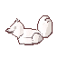
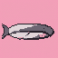
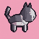
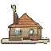
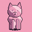
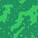

01Four doors
On November 1 we showed you three closed doors. Since then, one has swung open, two are still humming, and a fourth has appeared at the end of the row.
One open. Two busy. One brand new.
02The m-series: open
Behind the first door were m2 and m1+, two new sprite models. They're out now as a preview: m2 for every plan, m1+ for Artisan and Atelier. They listen more closely, know their sizes and backgrounds, and can sit, lie down and sleep.






All made in the Studio during the preview. Read more in m2 and m1+ are out for preview.
03The c-series
The newest family from last time. Its first model, c1, is about to go to school.
Still not saying what it does. You'll see.
04The v-series
Things that move. The next ones are packed and waiting for their turn, right after c1.
05The s-series
This is the new door. s is for scenic.
Everything Mosaic has drawn so far has been a sprite: one thing, on its own. The s-series draws scenes: a whole place, with something happening in it. A cat in a forest, next to a mushroom. That kind of thing.
- Any shape. Square, wide, tall: pictures for a phone, for a desktop, for a banner.
- The most pixels yet. The highest resolution of any Mosaic model.
The first one is s1. It's still being built.
06What comes next
c1 goes first, then the v-series, then s1. Each one takes as long as it takes: everything at Mosaic is made from scratch.
Keep an eye on this blog.